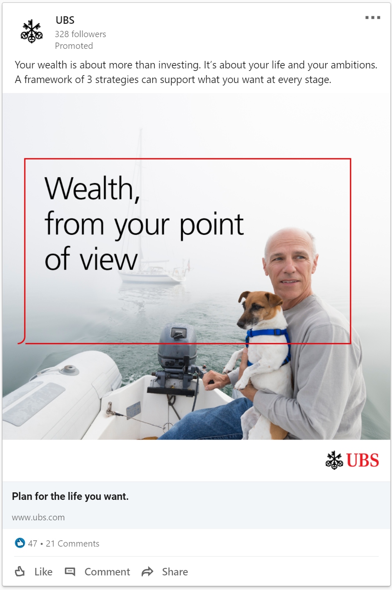

Social media
Creative direction | Visual design
Social media
Raising awareness
A selection of social media assets created by me and my team for UBS.
A key driver in our strategy is to meet our users where they are. Using data gathered from our Social Media and Platform teams and working with our content and copy teams, we were able to target our audience and deliver the message and experiences that were most relevant to them in a way they were most likely to engage with.


In context
Additional posts as displayed on their respective sites using a photographic style.
